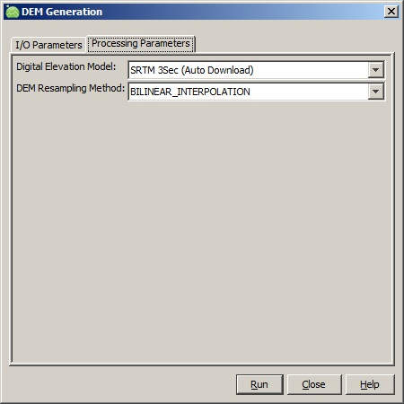

| Phase to Elevation |
|
Two phase-to-height conversions are available. They differ in how the phase ambiguity is referenced and in whether a DEM is required.
Schwabisch) — the Doris polynomial method [2]. Reference phase is
evaluated from the precise orbits at several altitudes in a set of points
distributed over the scene; a 1D polynomial in phase is fitted for the
height at each point, and each of its coefficients is then modelled as a
2D polynomial in (line, pixel). This captures the spatial variation and
the nonlinearity of the phase-to-height relation and needs
no DEM. This method was previously exposed as the separate
"Phase to Height" operator, which is now deprecated.
Bistatic stacks. A single-pass bistatic pair (TanDEM-X CoSSC, one transmitter and two receivers) is
detected from the bistatic_stack metadata flag. Its phase is 2π/λ times the range
difference instead of 4π/λ, so both methods use the bistatic height of ambiguity
λR sinθ/B⊥, twice the repeat-pass value
λR sinθ/(2B⊥).
Changed in SNAP 15: earlier versions treated bistatic pairs as repeat-pass, so their heights came out at half scale about the reference height. Repeat-pass results are unchanged.
DEM Seed or Schwabisch (the Schwäbisch method), as described above.
GPT operator: PhaseToElevation. Generated from the operator source; parameter names are those used in GPT and graph XML.
| Parameter | Type | Default | Allowed values | Unit | Description |
|---|---|---|---|---|---|
method | String | DEM Seed | DEM Seed, Schwabisch | DEM Seed: linearise the phase-to-height relation about a reference point solved from low-slope DEM seeds (requires a DEM). Schwabisch: fit reference phase at several altitudes with a 1D polynomial per point and a 2D polynomial across the scene (requires no DEM). | |
demName | String | Copernicus 30m Global DEM | The digital elevation model. | ||
demResamplingMethod | String | BILINEAR_INTERPOLATION | DEM Resampling Method | ||
externalDEMFile | File | External DEM | |||
externalDEMNoDataValue | double | 0 | DEM No Data Value | ||
nPoints | int | 200 | 100, 200, 300, 400, 500 | Schwabisch only: number of points at which reference phase is evaluated. | |
nHeights | int | 3 | 2, 3, 4, 5 | Schwabisch only: number of height samples in the range [0, 5000) m. | |
degree1D | int | 2 | 1, 2, 3, 4, 5 | Schwabisch only: degree of the 1D polynomial fitting height against reference phase. | |
degree2D | int | 5 | 1, 2, 3, 4, 5, 6, 7, 8 | Schwabisch only: degree of the 2D polynomial fitting the 1D coefficients across the scene. | |
orbitDegree | int | 3 | 2, 3, 4, 5 | Has no effect. The orbit is interpolated between state vectors with a local 8-point Lagrange polynomial; the parameter is kept so that existing graphs still load. |